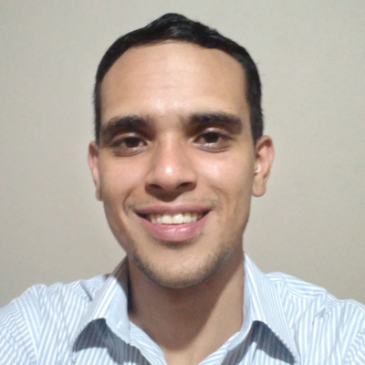

Curriculo
Dados Pessoais

Nome:
Felipe Talles De Melo
Data de Nascimento
29/07/1993
Residência
São Paulo, Brasil
Idioma
Português (Nativo)
Inglês Básico
Sobre Mim
Olá sou Felipe, estudante de desenvolvimento web, iniciei os estudos faz 1 ano me reconheço como entusiasta em novas tecnologias do mercado, com aprendizagem adquirida dia após dia.
Possuo foco em desenvolvimento com Html5, Css3 e Javascript e procuro está evoluindo dia após dia criando projetos básicos ao avançado para desempenhar e alcançar grandes objetivos. Quero poder trabalhar com desenvolvedores que tenham mais experiência, para poder aprender as boas praticas de programação, contribuir com as metas dos times, participar e contribuir gerando bons resultados. Meu objetivo é no futuro próximo me tornar um desenvolvedor Fullstack.
Me considero ágil e consistente em aprender novas tecnologias e alta adaptabilidade às mudanças, pronto para superar qualquer desafio! Se eu pudesse me definir em 3 palavras, certamente seriam: Esforçado, Dedicado, Perseverante!
Educação
05/10/2022 - Concluido
MICROCAMP / Curso Técnico
Cursos Complementares
UDEMY / Web Design Completo - HTML - CSS - JAVASCRIPT
Habilidades
Stacks / Ferramentas
Fluxo de trabalho
Desenvolvimento Ágil Organizado
Mobile-First, Design Responsivo
Experiência de Trabalho
12/08/2021 - 12/12/2022
Garçom - Buffet Paula Matrimonial - Mooca
02/04/2022 - 05/10/2022
Ajudante de carga e Descarga - Aerosoft - Guarulhos
26/07/2019 - 05/12/2019
Web-Designer - Westimann-Distruidura - Brás
← Voltar ao inicio